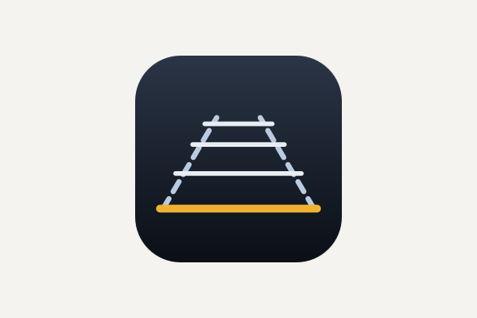

The Catalog
Everything here is free, open source, and published under the MIT licence. There are no ads, no accounts, and no telemetry — the download numbers below come from GitHub's public release statistics, not from anything the apps report about you.

pySPWB
Desktop application and Python library · Windows, macOS and Linux · runs with or without Python installed
Measurement signal processing: spectra, transfer functions, coherence, spectrograms and adaptive filtering, in five analysis windows that share their signals. Download and run it with nothing else installed, or pip install spwb and use the same maths from a notebook. Its results are checked against LabVIEW 2022, and it succeeds the LabVIEW Signal Processing Work Bench.
— downloads
Find Out More! Download Source
CloakClip
Desktop application · Windows and macOS · single file, no installation
Encrypt and decrypt text with a shared password, straight from the clipboard. A cloaked message is ordinary text, so it travels through any chat, email or note — and on Windows the app keeps the decrypted version out of clipboard history and cloud sync.
— downloads
Find Out More! Download Source
SAE Fractional Calculator
Desktop application · Windows and macOS · single file, no installation
A calculator that works the way a tape measure does: yards, feet, inches and fractions on an exact 1/32″ grid, added and subtracted without ever converting to decimals in your head.
— downloads
Find Out More! Download Source
HTML Font Toolbar
Obsidian plugin · in the official community directory
A floating, Word-like formatting toolbar for Obsidian notes: colors, highlights, sizes, fonts, alignment and a symbol picker — all merged into a single clean inline HTML span instead of nested wrappers.
— downloads
Find Out More! Install from Obsidian Community Source
HTML Table Toolbar
Obsidian plugin · in the official community directory · sister plugin to HTML Font Toolbar
A Word-style toolbar for real HTML tables in Obsidian: add rows and columns, merge and split cells, set header rows, align, control borders per row and per column, and shade individual cells — none of which a Markdown pipe table can do.
— downloads
Find Out More! Install from Obsidian Community Source
RV Backup Helper
Desktop application · Windows · installer, with Python bundled
Distance lines and a vehicle-width corridor on an RV backup camera that draws none. Record behind your own coach, click each distance in the footage, and the application generates and flashes an Arduino sketch that overlays those measurements on the live picture — keeping the camera and the display you already have.
— downloads
Find Out More! Download SourceAbout These Numbers
Each count is a cumulative total since the app's first version, read when you open this page and kept in your browser for six hours so it is not fetched again on every visit. Desktop applications are counted by GitHub: every download of a published release file, which leaves out copies of the source taken with the green Code button, since those are counted nowhere. The Obsidian plugins are counted by Obsidian, which is the honest number for a plugin — almost everyone installs from the community directory, and GitHub never sees those.
Those plugin figures come from the statistics Obsidian publishes, which trail their own counter by a day or two. Each plugin's repository copies its number out of that file once a day, so this page fetches a few hundred bytes rather than the two megabytes it covers; the full file is still read directly if a plugin's own record is missing. The figure on Obsidian's directory page will not match exactly, and above a thousand it cannot — that page rounds, showing “1k” where the real total is 951. A dash means neither source could be reached, rather than a count of zero.